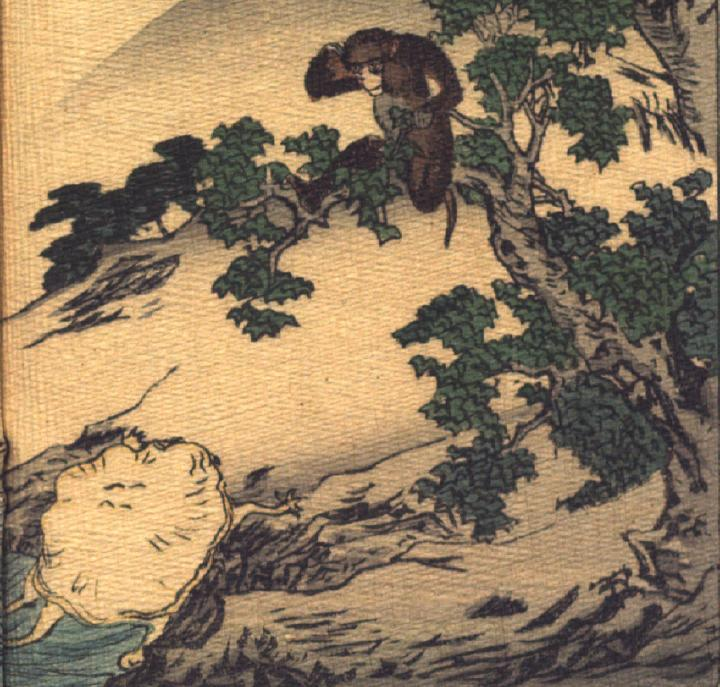

猿に話しかけるくらげ。くらげは海から這い上がろうとしている。猿は木の上から、くらげを見ている。
著作者：J.Dautremer／出典：親書誌：U426_nichibunken_0107：La meduse simple et naïve／日付：2006／資源識別子：U426_nichibunken_0107_0005_0000
Copyright (c)2010- International Research Center for Japanese Studies, Kyoto, Japan. All rights reserved.